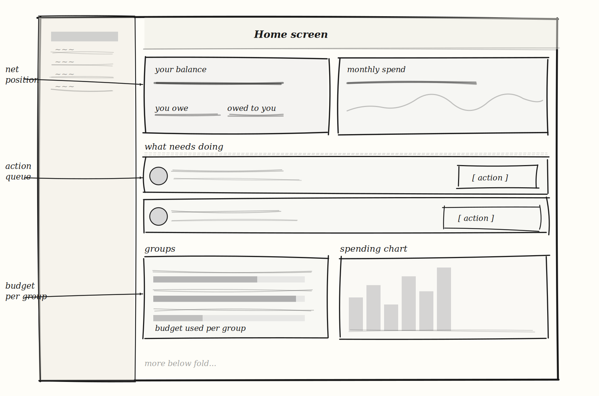
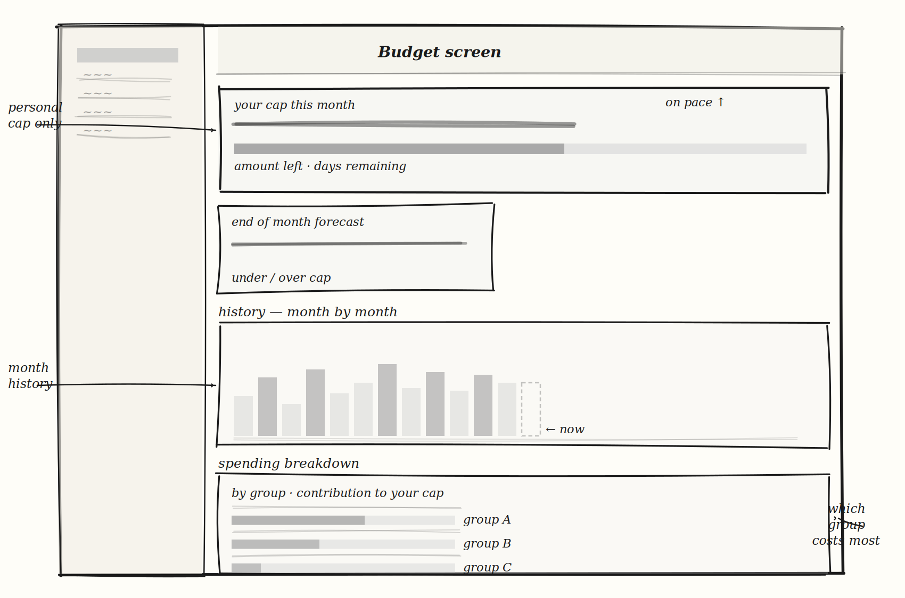
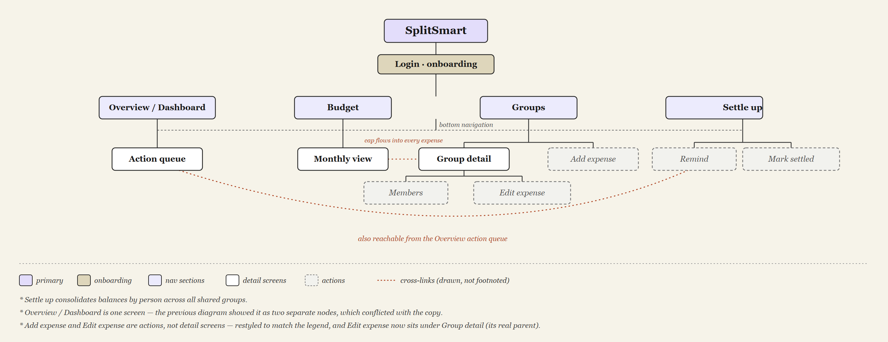
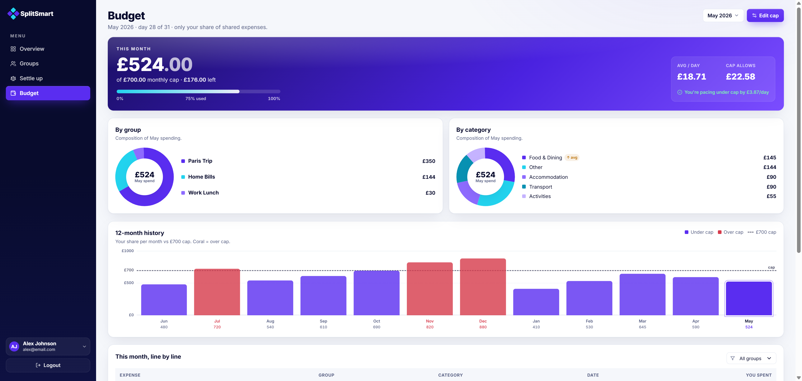
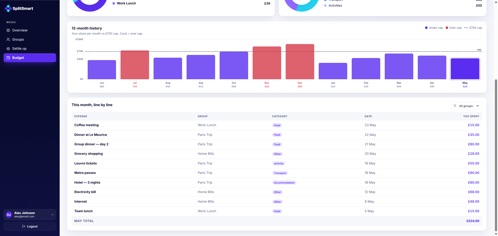

Every app answers one question. It was never the only one.
When you are managing a Paris Trip group, a Home Bills group, and a Work Lunch group simultaneously, you are not just tracking debts. You are managing your own money. Every expense logged by a friend is a cost that lands on your personal budget — but expense apps only show the group's side of that equation.
I audited four apps — Splitwise, Tricount, Settle Up, and Venmo Groups — mapping tap depth to key actions and examining what financial information each surfaces at the home view.
Shared findings across all four apps:
— Home screen shows groups or friends, not actions. Balances were visible, but to settle or send a reminder you had to navigate into a group first. No app combined a balance with its primary action in the same view.
— No personal budget layer. Every app stopped at the group ledger. Your share of costs across all active groups was never aggregated or tracked against a personal cap.
Splitwise's own support forums surfaced this last gap repeatedly, with users requesting personal budget tracking — a feature the team acknowledged but deprioritised.
Two layers. One app.
Shared expenses are still your expenses. A Paris Trip costs the group £1,050. But it costs you £350. That number belongs in your personal budget, not only in the group ledger.
Layer 1 — Shared expense management.
Split costs, track group balances, settle debts, send reminders.
Layer 2 — Personal budget intelligence.
A dedicated Budget screen that:
— Isolates your share of costs across all active groups
— Tracks your total spend against a monthly cap you set
— Shows whether your daily pace keeps you under cap — your average spend per day against what the cap allows
These two layers are not separate features — they are the same financial reality seen from two angles: the group's ledger and your personal budget.


Before moving to high fidelity, I mapped the full app hierarchy: every screen, how they connect, and where key actions live. This made it possible to validate the two-layer structure — shared and personal — before committing to interface work, and to confirm that the Budget screen could sit as a peer to the Overview / Dashboard rather than buried inside it.

What each screen had to prove.
Overview / Dashboard — action next to position
The core decision was to place a balance and its settle action in the same view. When the next step is already visible, the user does not need to decide where to go — they simply act.

Budget screen — personal, not group
Rather than showing group totals, the Budget screen translates shared expenses into a personal financial picture: your share, your cap, your pace against it.


Settle up — consolidated by person
Balances are grouped by person across every group, not group by group, and ordered by what needs action. What you owe and what you're owed sit side by side with the fewest transfers to clear them; already-settled people drop to an all clear list at the bottom.

Groups page — remaining, not spent
The decision was to surface how much budget each group has remaining, not just how much it has spent. Remaining is actionable. Spent is history.

Five participants, ten minutes each.
5 participants · 10 minutes each · unmoderated
| Metric | Result |
|---|---|
| Average time to identify balance | ~4 seconds |
| Average taps to settle a balance | 1–2 taps |
| Task completion rate | 100% |
| Participants needing assistance | 0 of 5 |
| Understood budget status immediately | 4 of 5 |
| Expected to settle everyone at once | 3 of 5 |
All five participants completed primary tasks with no major navigation issues. Balance, settlement, and budget status were understood quickly across the board.
Key finding: Three of five participants expected to clear everything in one pass — settling all the people they owed at once — rather than opening each balance and paying it one by one. They thought in terms of who they owe and wanted a single action to settle up, not a debt-at-a-time flow. This directly drove the redesign of the Settle up screen.
Open question: One participant expected the settle action directly on the balance card, one tap earlier than the current flow allows. This wasn't addressed in the redesign and remains a potential improvement.
"I expected to settle everyone at once, not one by one."
"I can immediately tell what I actually spent."
"Feels simpler than other expense-splitting apps."
Based on the testing findings, I redesigned Settle up so people could settle everyone at once instead of working through debts one at a time. Pay all and Remind all now clear every balance across all groups in a single move, in the fewest transfers — and a single row still settles one person on its own.

No percentage-based or weighted splits.
Every expense currently divides equally between members. Real groups rarely work that way: one person earns more, one person missed part of a trip, one person ordered less. Without support for custom splits by percentage, share count, or exact amount, SplitSmart forces a fairness assumption that doesn't hold in practice. This is the most functionally limiting constraint in the current design.
No multi-currency support.
The app assumes a single currency throughout. For international group trips — the core use case the Paris Trip example was designed around — this is a significant constraint that would need to be addressed before the app could serve its intended audience fully.
SplitSmart is built on the idea that you shouldn't have to juggle the group's ledger and your own budget separately. The app ties them together, so shared expenses land where they actually belong: in your personal financial picture.